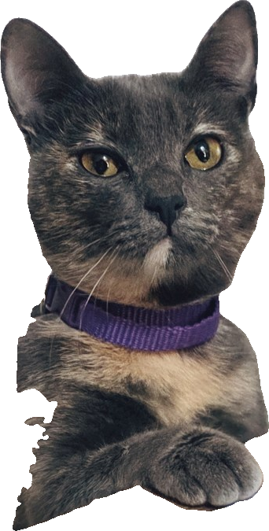
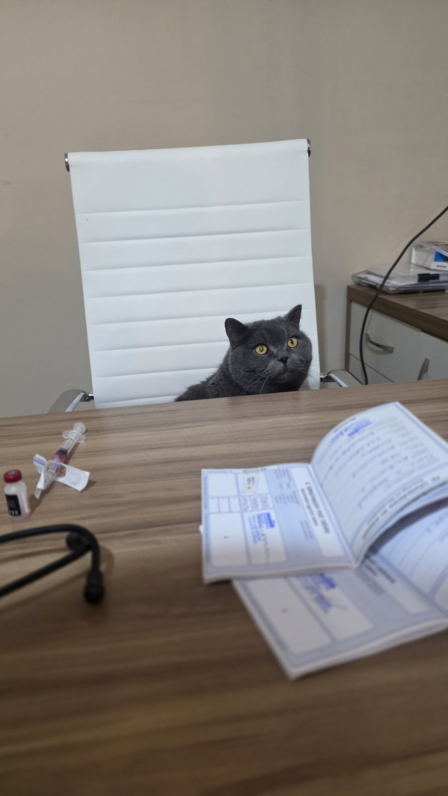

Tem um fungo passando de gato pra gente em Curitiba.
Esporotricose
6,9 milcasos no Paraná em 2025. Quase 5,8 mil em gatos e mais de 1.200 em pessoas.
O jeito que ele passa explica por que se espalha tão rápido.
Pela pele, num arranhão ou numa mordida.
Gato que sai pra rua briga, se machuca e traz pra casa. Daí chega no outro gato e em quem cuida dele.
Por isso o sinal que importa é este:
Ferida no nariz, no rosto ou nas patas que fecha e abre de novo.

Viu isso no seu gato? O próximo passo é o mais importante.
Pega ele com toalha ou luva, sem pressa, e marca consulta.
Tem tratamento.
Só que ele é longo, e é aqui que muita gente erra:
Parar o remédio quando a ferida fecha.
O fungo ainda está lá, e a ferida volta. O tratamento vai até a alta, mesmo com o gato parecendo curado.
Pra não chegar nisso:
Castração e tela na janela.
Gato que fica em casa se expõe bem menos. Em Curitiba, a Prefeitura atende de graça gatos com suspeita, em parceria com a PUCPR. As datas saem pelo 156.
Agora, pra quem mandar este post:
Conhece alguém com gato que sai pra rua?
Manda pra essa pessoa.